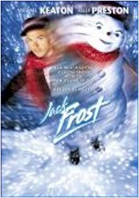
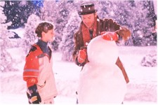
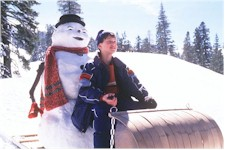

Contents | Features | Reviews | Books | Archives | Store |
 |
|
| Movie Credits | Buy It! |
Jack Frost
Review by Eddie Cockrell
Posted 11 December 1998
|  | Directed by Troy Miller Starring
Michael Keaton, Kelly Preston, Written by Mark Steven Johnson and Steven Bloom |
"What are they doing, Mommy?" came the plaintive voice from a few rows back during one of many excruciatingly slow and fatally quiet passages of Jack Frost, Michael Keaton’s limp and dispirited new comedy. Mommy’s response couldn’t be heard (if, indeed, she was awake), but it’s doubtful that even the platoon of writers responsible for this wretched movie -- easily the most spectacular special effects misfire since Howard the Duck -- could’ve explained how any of the top-shelf talent on display found themselves involved in this slushy fiasco.
Keaton is the title character, a sincere, ambitious and hard-working bandleader whose blues outfit is poised to finally make a national mark after years of gigging. In the small Colorado town of Medford, Jack’s wife Gabby (Kelly Preston) and son Charlie (Joseph Cross) wait patiently for Dad to come home, only to be crushed when he’s called away again on the eve of a family weekend away by an opportunity to audition for a big-time record company contract. Changing his mind halfway to the show, Jack is caught in a huge snowstorm on the drive back and perishes tastefully in an auto accident.
One year later, Charlie is still distraught over his loss, cherishing the "magic" harmonica his father gave him shortly before his death (he was also in the midst of learning his hockey-obsessed father’s "J-shot," but has now given up the sport). When a toot on the instrument brings a snowman to life as the reincarnated Jack, the two band together and help Charlie overcome his indifference and excel at hockey -- and life.
This is the kind of movie where automobiles are spotless in the midst of snowstorms and the lead character is sad because he can’t buy his family "a big house," even thought their current home looks like something out of a magazine. And it is timed dreadfully for a film supposedly aimed at children, sporadically punctuated by whizzing snowballs that can’t quite drown out the buzzing of the bored children in the audience. Perhaps this isn’t too surprising, as the writing, with its awkward emphasis on artificial appendages and such phrases as "freezing my ass off," is wholly inappropriate for the target audience.
The movie comes alive only twice, during an inspired opening scene that details a delightfully blocked schoolyard snowball attack and its attendant strategies, and at about the halfway point during an exuberant downhill snowboard chase cut to Swirl 360’s exuberant "Hey Now Now." The much-ballyhooed Hanson appearance is brief, and otherwise the music of ex-Yes-man Trevor Rabin is functional at best. And while the soundtrack does feature a nice mix of blues, inspirational and holiday cuts by the likes of Lucinda Williams, Jars of Clay and Spice Girls, it is mercifully lacking the Stevie Nicks song that thunders in at the film’s most treacly moment.
Incredibly, Sam Raimi and George Clooney were supposed to make this movie at one point, with the former no doubt interested in building on the identically titled 1996 low-budget horror film about a serial killer who turns into a snowman (there’s also a 1966 Soviet children’s film by the same title -- spoofed at one point on "Mystery Science Theater 3000" -- as well as a Church-y sounding band that had a record called "SnowJob" out a few years back).
Not a trace remains of anything resembling something more ambitious than a lowest-common-denominator cash-in, with "Mr. Show" director Troy Miller’s work functional at best. Even legendary cinematographer Laszlo Kovacs (he shot Easy Rider, The King of Marvin Gardens, Ghostbusters and Keaton’s terrific and underrated Multiplicity) can’t bring life or warmth to the proceedings. Ironically, where Raimi’s A Simple Plan has some of the most authentic-looking fake snow in a movie, Jack Frost has some of the worst, matched only by the cumbersome and artificial-looking snowman ("He was so expressive he made me cry," Preston told "Entertainment Weekly," and now we know why).
 Keaton
is in full annoyance mode and treads water desperately because of it, resorting to a
million cries of "oh, man" when all else fails. He’s one of
Hollywood’s most transparent above-the-line stars, strutting confidently through
movies like Beetlejuice, Clean and Sober, Multiplicity, Jackie Brown and the uncredited reprise of that role in Out of Sight, yet looking nothing less than terrified
here and in other films where he doesn’t seem to have a handle on the material.
Preston and Cross are bland at best, while Mark Addy (he of The Full Monty fame) is
sincere yet seemingly puzzled as Jack’s faithful bandmate. Only Henry Rollins -- of
all people -- provokes authentic laughter in his underwritten but vigorously performed
role as a blustery hockey coach who is spooked by the snowman.
Keaton
is in full annoyance mode and treads water desperately because of it, resorting to a
million cries of "oh, man" when all else fails. He’s one of
Hollywood’s most transparent above-the-line stars, strutting confidently through
movies like Beetlejuice, Clean and Sober, Multiplicity, Jackie Brown and the uncredited reprise of that role in Out of Sight, yet looking nothing less than terrified
here and in other films where he doesn’t seem to have a handle on the material.
Preston and Cross are bland at best, while Mark Addy (he of The Full Monty fame) is
sincere yet seemingly puzzled as Jack’s faithful bandmate. Only Henry Rollins -- of
all people -- provokes authentic laughter in his underwritten but vigorously performed
role as a blustery hockey coach who is spooked by the snowman.
Originally scheduled for a much more low-profile November 6 release, Jack Frost has now set itself up for scathing critical abuse and spectacularly indifferent numbers (maybe it’ll take some of the hear off of the not at all bad Babe: Pig in the City). If anyone involved with this instantly forgettable movie knew what they were doing, it isn’t apparent in the finished product.
Contents | Features | Reviews | Books | Archives | Store
Copyright © 1999 by Nitrate Productions, Inc. All Rights Reserved.